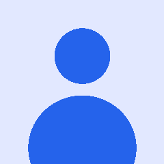

Про автора
Мене звати Савчук Артем Павлович. Я навчаюся у групі КН-3/1 і вивчаю веброзробку.
У межах курсу створюю TaskBoard: від першої HTML-сторінки до інтерактивної дошки завдань.

Мене звати Савчук Артем Павлович. Я навчаюся у групі КН-3/1 і вивчаю веброзробку.
У межах курсу створюю TaskBoard: від першої HTML-сторінки до інтерактивної дошки завдань.
| Етап | Що вивчаю | Статус |
|---|---|---|
| 1 | HTML і Git | Виконано |
| 2 | CSS і адаптивність | Виконано |
| 3 | JavaScript і DOM | Виконано |
| 4 | Python і Flask | Заплановано |